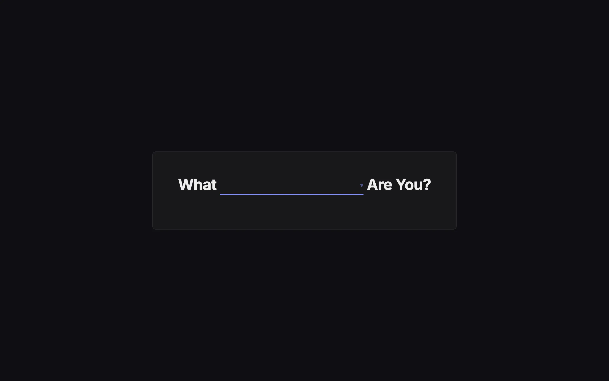

Those "What kind of X are you?" quizzes are everywhere online. What sandwich are you. What 90s sitcom character are you. They're hugely popular. The thing I noticed is that they always have the same structure: a fixed set of multiple-choice questions, a mapping from answers to results, and a big reveal at the end. The questions are generic personality questions that could map to anything. The category doesn't actually matter.
{kind=link}
So I built a version where the category is a parameter. You pick a topic from a dropdown and the quiz generates itself. The questions are the same regardless. What changes is the result, which gets pulled live from Wikipedia.
Categories
The app has a curated list of 60+ Wikipedia categories: Animals, Birds, Countries, Foods, Sports, Musical Instruments, and so on. On each page load, the list is shuffled and 25 are presented in a dropdown. Category names are singularized for display ("Countries" becomes "Country" in the title "What Country Are You?"). Selecting a category triggers a MediaWiki API call that fetches all members of that category, filtering out disambiguation pages, list articles, and redirects so the result pool contains only real, concrete things.
How the result is determined
The quiz presents 10 questions drawn randomly from a pool of 500. Each question has four multiple-choice answers ("How many bees could you fit in your mouth?" / "I am the bee king").
When you finish, your answers are fed into a hash function. Each answer's numeric value is multiplied by its question position (1-indexed), and the products are summed. The total is taken modulo the number of filtered category members. This produces a deterministic mapping: the same answers always select the same article. A second API call fetches the selected article's summary text and thumbnail image for the reveal screen, with a link to the full article.
The result set updates whenever Wikipedia does. If someone adds a new entry to a category, it becomes a possible quiz result without any change to the code.

{kind=link}
The Jeopardy theme
There's an audio file bundled with the project: the Jeopardy! think music. It starts playing on the first user interaction (browsers require a gesture before autoplaying audio) and gradually speeds up as you progress through the questions. By question 8 or 9 the music is noticeably fast. It turned out to be the feature people mention most when they share the link.
Design
The UI is dark-themed with blue accent buttons. A progress bar fills as you answer questions. The transitions between the title screen, quiz, and results use CSS fade animations. The whole app is a single HTML file with inline JavaScript and CSS. No framework, no build step. The only external dependency is the Wikipedia API.